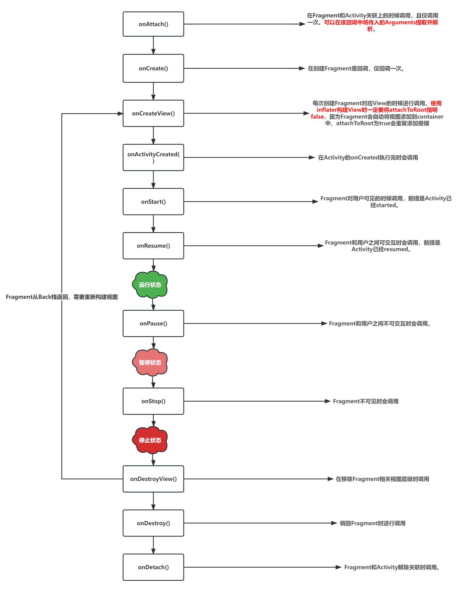

相信android开发者们一定或多或少的用过Fragment，但是对于其更深层次的原理我猜可能大部分应该都没有了解过，今天这里就由浅入深，整体对Fragment做一个全面解析。
Fragment直译为碎片，是Android 3.0引入的组件，Fragment不能单独使用，必须要依赖于Activity。 Fragment引入之前几乎所有的逻辑都被放置在Activity中，使得Activity臃肿而混乱，Fragment作为一个微小的Activity诞生。
另外Fragment还有以下几个特点：
Fragment作为管理一组View的组件，也是有自己的生命周期的，和Activity类似，但又不完全一样。基本生命周期如下图所以：

FragmentManager：通过getSupportFragmentManager函数获取，用来管理Activity中的Fragment。
FragmentTransaction：事务。可以通过FragmentManager调用beginTransaction()方法来开启一个事务。通过事务，我们可以对Fragment进行一系列的操作。如下：
add：添加一个Fragment到Activity中。
remove：从Activity中移除一个Fragment。如果Fragment没有被加入回退栈中，则该Fragment会进行销毁。
replace：用另一个Fragment替换当前的Fragment，本质上时先remove再add。
hide：隐藏当前的Fragment，设置为不可见，不会销毁，与之对应的是show。本质是对View进行调用了View.GONE。
show：显示之前隐藏的Fragment，与之对应的是hide。本质是对View进行调用了View.VISIBLE。
detach：将视图进行移除，但是并不销毁Fragment，Fragment依旧由FragmentManager进行管理。
addToBackStack：将Fragment加入返回栈。当移除或替换一个Fragment并向返回栈添加事务时，系统会停止（而非销毁）移除的Fragment。如果没有addToBackStack，则被替换的Fragment会直接进行销毁。
//示例，如果用户执行回退操作进行Fragment的恢复，被替换的Fragment将重新启动。ft.replace(R.id.fl_content, LearnFragment()).addToBackStack(null).commitAllowingStateLoss()setMaxLifecycle：设定Fragment生命周期最高上限。如果设置的生命周期上限低于当前的生命周期上限，则会进行回退设定的生命周期。
比如，当前生命周期为RESUME，如果设置MaxLifecycle为START，则生命周期则会回到RESUME。
说一个例子，在调用hide和show函数的时候，Frgament的生命周期并不会进行变化。但是我就是想要在show的时候让Fragment走到RESUME呢？此时可以进行如下操作。
xxxxxxxxxx//hideft.setMaxLifecycle(fragment,Lifecycle.State.STARTED).hide(fragment)//showft.setMaxLifecycle(fragment,Lifecycle.State.RESUMED).show(fragment)commit/commitAllowingStateLoss：提交一个事务。commit如果状态丢失则会抛异常，commitAllowingStateLoss则不会。
接下来站在源码角度对Fragment进行一波分析，看看Fragment是如何实现的。相信可以对Fragment有更深层次的认识。
我们需要添加一个Fragment到Activity中时，一般会进行如下操作：
xxxxxxxxxxval fragmentManager = getSupportFragmentManager() // 获取fragmentManagerval ft = fragmentManager.beginTransaction() // 开启事务ft.add(R.id.fl_content, LearnFragment(), tag) // 添加ft.commitAllowingStateLoss() // 提交事务我相信上面的代码，大家可能都非常熟悉了，接下来就根据上述代码，一步一步进行源码跟踪分析。
getSupportFragmentManager()方法，在FragmentActivity类中。
xFragmentActivityfinal FragmentController mFragments = FragmentController.createController(new HostCallbacks());public FragmentManager getSupportFragmentManager() { //通过mFragments 获取了FragmentManager 而mFragments即为 FragmentController return mFragments.getSupportFragmentManager();}FragmentController//FragmentController 通过createController函数创建，其实即为new了FragmentController对象，传入了HostCallbackspublic static FragmentController createController( FragmentHostCallback<?> callbacks) { return new FragmentController(checkNotNull(callbacks, "callbacks == null"));}public FragmentManager getSupportFragmentManager() { //mHost即为传入的HostCallbacks，即通过HostCallbacks获取到了FragmentManager return mHost.mFragmentManager;}//HostCallbacks 继承自 FragmentHostCallback，而mFragmentManager在FragmentHostCallback中进行了初始化。FragmentHostCallbackfinal FragmentManager mFragmentManager = new FragmentManagerImpl();所以在FragmentActivity中会持有FragmentController对象，而FragmentController其实是暴露在外的代理类，相关的逻辑均交由HostCallbacks完成，而HostCallbacks内部则构建了FragmentManagerImpl即我们所需要的FragmentManager对象。而HostCallbacks也提供了一些Fragment一些常用的参数，比如获取Activity、Context、Handler等，该对象会在Fragment进行attach的时候传递给Fragment。
xxxxxxxxxxActivity getActivity() { return mActivity;}Context getContext() { return mContext;}Handler getHandler() { return mHandler;}接下来看beginTransaction做了什么事情。
xxxxxxxxxxFragmentManagerpublic FragmentTransaction beginTransaction() { //仅仅返回了BackStackRecord对象 return new BackStackRecord(this);}BackStackRecordBackStackRecord( FragmentManager manager) { super(manager.getFragmentFactory(), manager.getHost() != null ? manager.getHost().getContext().getClassLoader() : null); mManager = manager;}beginTransaction是FragmentManager的代码，所以自然在FragmentManager中寻找。但是我们发现很简单，beginTransaction其实就是简单的返回了一个BackStackRecord对象，同时它持有了FragmentManager对象。
我们接下来看一下add操作。通过上面我们知道FragmentTransaction其实是BackStackRecord对象。我们跟一下add操作。
xxxxxxxxxxFragmentTransactionpublic FragmentTransaction add( int containerViewId, Fragment fragment, String tag) { //调用doAddOp注意次数传入的最后一个参数为 OP_ADD doAddOp (containerViewId, fragment, tag, OP_ADD); return this;}void doAddOp(int containerViewId, Fragment fragment, String tag, int opcmd) { ... //tag 赋值 fragment.mTag = tag; ... //容器Id 赋值 fragment.mContainerId = fragment.mFragmentId = containerViewId ... //将OP_ADD和fragment 放入Op对象中，调用addOp addOp(new Op(opcmd, fragment));}ArrayList<Op> mOps = new ArrayList<>();void addOp(Op op) { //放入数组中 mOps.add(op); op.mEnterAnim = mEnterAnim; op.mExitAnim = mExitAnim; op.mPopEnterAnim = mPopEnterAnim; op.mPopExitAnim = mPopExitAnim;}总结：add操作即将当前的命令和Fragment放到了集合里面存了起来。而Op则是最终存的对象，我们可以看一下其的数据结构。
xxxxxxxxxxstatic final class Op {int mCmd;//代表当前具体是什么操作，比如add、replace、remove、hide.....Fragment mFragment;int mEnterAnim;int mExitAnim;int mPopEnterAnim;int mPopExitAnim;Lifecycle.State mOldMaxState;Lifecycle.State mCurrentMaxState;}
好了，不知不觉我们就到了最后一步，接下来看看commit干了什么吧。上源码。
我相信现在经常用的是commitAllowingStateLoss吧，所以我们直接看它。
xxxxxxxxxx BackStackRecord public int commitAllowingStateLoss() { //调用commitInternal allowStateLoss = true return commitInternal(true); } int commitInternal(boolean allowStateLoss) { ... //调用到FragmentManager 的enqueueAction方法 mManager.enqueueAction(this, allowStateLoss); return mIndex; } FragmentManager void enqueueAction( OpGenerator action, boolean allowStateLoss) { if (!allowStateLoss) { //由于我们使用的是commitAllowingStateLoss 所以allowStateLoss = true，所以不会校验下面的东西，即不会抛出下面的异常。 if (mHost == null) { if (mDestroyed) { throw new IllegalStateException("FragmentManager has been destroyed"); } else { throw new IllegalStateException("FragmentManager has not been attached to a " + "host."); } } checkStateLoss(); } synchronized (mPendingActions) { ... //加入数组 mPendingActions.add(action); //继续调用 scheduleCommit(); } } void scheduleCommit() { synchronized (mPendingActions) { ... //核心 将mExecCommit 调度到主线程执行 mHost.getHandler().post(mExecCommit); } } private Runnable mExecCommit = new Runnable() { public void run() { execPendingActions(true); } }; boolean execPendingActions(boolean allowStateLoss) { ... boolean didSomething = false; //将 mPendingActions 的BackStackRecord 对象放到了mTmpRecords数组中 while (generateOpsForPendingActions(mTmpRecords, mTmpIsPop)) { mExecutingActions = true; try { //执行 removeRedundantOperationsAndExecute(mTmpRecords, mTmpIsPop); } finally { cleanupExec(); } didSomething = true; } ... return didSomething; }Commit的操作比较多一点，到这里首先总结一下。
commit操作会交给FragmentManager进行统一执行。commitAllowingStateLoss和commit的本质区别是，不会对一些意外的状态进行校验而抛出异常，比如mHost==null或者已经destroy或者activity 已经调用过onSaveInstanceState了。接下来继续调用到了removeRedundantOperationsAndExecute，中国调用链也比较复杂一点，所以这里直接放调用链了。
xxxxxxxxxxFragmentManager removeRedundantOperationsAndExecute 👇FragmentManager executeOpsTogether👇FragmentManager executeOps👇BackStackRecord executeOps // 注意此时执行到了BackStackRecord的executePopOps接下来比较重要一点，我们看一下BackStackRecord里面的executePopOps是如何进行实现的
xxxxxxxxxxvoid executeOps() {... for (int opNum = 0; opNum < numOps; opNum++) { final Op op = mOps.get(opNum); final Fragment f = op.mFragment; if (f != null) { f.setPopDirection(false); f.setNextTransition(mTransition); f.setSharedElementNames(mSharedElementSourceNames, mSharedElementTargetNames); } switch (op.mCmd) { case OP_ADD: f.setAnimations(op.mEnterAnim, op.mExitAnim, op.mPopEnterAnim, op.mPopExitAnim); mManager.setExitAnimationOrder(f, false); //添加 内部fragment持有了当前的FragmentManager，同时构建了FragmentStateManager 将fragment放入到了FragmentStore的add和active中 fragment.removing 设置为了false mManager.addFragment(f); break; case OP_REMOVE: f.setAnimations(op.mEnterAnim, op.mExitAnim, op.mPopEnterAnim, op.mPopExitAnim); mManager.removeFragment(f); break; ... //重点 状态移动 mManager.moveToState(mManager.mCurState, true);还记得之前在add时候看到的数组吗？在BackStackRecord中被拿出来进行循环获取需要执行的命令。比如add，则执行了addFragment。其他的命令也一样在这个地方执行，就不一一列举了。
xxxxxxxxxx FragmentManager FragmentStateManager addFragment( Fragment fragment) { FragmentStateManager fragmentStateManager = createOrGetFragmentStateManager(fragment); //持有FragmentManager fragment.mFragmentManager = this; //fragmentStateManager 放入store的active数组 mFragmentStore.makeActive(fragmentStateManager); if (!fragment.mDetached) { //将fragment放入store mFragmentStore.addFragment(fragment); //设置mRemoving 为false fragment.mRemoving = false; if (fragment.mView == null) { //设置mHiddenChanged为false fragment.mHiddenChanged = false; } if (isMenuAvailable(fragment)) { mNeedMenuInvalidate = true; } } return fragmentStateManager; }接下来看一下moveToState函数
xxxxxxxxxxFragmentManagervoid moveToState( Fragment f, int newState) { FragmentStateManager fragmentStateManager = mFragmentStore.getFragmentStateManager(f.mWho); ... newState = Math.min(newState, fragmentStateManager.computeExpectedState()); if (f.mState <= newState) { // If we are moving to the same state, we do not need to give up on the animation. if (f.mState < newState && !mExitAnimationCancellationSignals.isEmpty()) { // The fragment is currently being animated... but! Now we // want to move our state back up. Give up on waiting for the // animation and proceed from where we are. cancelExitAnimation(f); } switch (f.mState) { case Fragment.INITIALIZING: if (newState > Fragment.INITIALIZING) { //attach fragmentStateManager.attach(); } // fall through case Fragment.ATTACHED: if (newState > Fragment.ATTACHED) { //create fragmentStateManager.create(); } // fall through case Fragment.CREATED: // We want to unconditionally run this anytime we do a moveToState that // moves the Fragment above INITIALIZING, including cases such as when // we move from CREATED => CREATED as part of the case fall through above. if (newState > Fragment.INITIALIZING) { fragmentStateManager.ensureInflatedView(); } if (newState > Fragment.CREATED) { fragmentStateManager.createView(); } .... }else{ switch (f.mState) { case Fragment.RESUMED: if (newState < Fragment.RESUMED) { fragmentStateManager.pause(); } // fall through case Fragment.STARTED: if (newState < Fragment.STARTED) { fragmentStateManager.stop(); } .... } f.mState = newState;}找到了，最终在Fragment的moveToState函数中，对Fragment状态进行了流转。期望的状态通过fragmentStateManager的computeExpectedState进行计算。并且各个生命周期均调用到了FragmentStateManager进行处理。
那么Activity的生命周期如何分发给Fragment了呢？还记得之前在Activity中的FragmentController了吗？其代理了FragmentManager。
比如要告知Activity当前已经Create完成了，则是如下流程：
xxxxxxxxxx FragmentActivity protect void start(){ ... mFragments.dispatchActivityCreated(); } //👇 //FragmentController public void dispatchActivityCreated() { mHost.mFragmentManager.dispatchActivityCreated(); } //👇 //FragmentManager void dispatchActivityCreated() { ... dispatchStateChange(Fragment.ACTIVITY_CREATED); } private void dispatchStateChange(int nextState) { ... //最终执行到了moveToState函数 moveToState(nextState, false); }都到这里了，那我们简单看一个Fragment的生命周期执行函数吧，比如我们看CreateView，则源代码在FragmentStateManager中进行执行。
xxxxxxxxxx void createView() { ... LayoutInflater layoutInflater = mFragment.performGetLayoutInflater( mFragment.mSavedFragmentState); ViewGroup container = null; ... //获取到Fragment的容器 mFragment.mContainer = container; //调用到createView，由开发者创建View mFragment.performCreateView(layoutInflater, container, mFragment.mSavedFragmentState); ... //将view添加到Fragment容器 其实是调用了container.addView addViewToContainer(); ... mFragment.mState = Fragment.VIEW_CREATED; }看吧，其实Fragment核心无非就是对View进行管理，让其有生命周期。最核心的一句还的是addView。
简单总结一下：
FragmentActivity 支持fragment功能的最底层的activity。FragmentActivity周期的分发，通过fragmentController最终分发给了FragmentManager，调用moveToState。moveToState的一些状态管理操作则交由了FragmentStateManager进行统一处理。FragmentTransition是抽象类，具体实现为BackStackRecord，同时beginTransaction即为返回了BackStackRecord对象。BackStackRecord对象可以进行多个操作，封装为Op对象存在数组中。最终通过FragmentManager相关的操作还是调度由自己的executeOps操作进行执行，比如add、remove、hide等等。